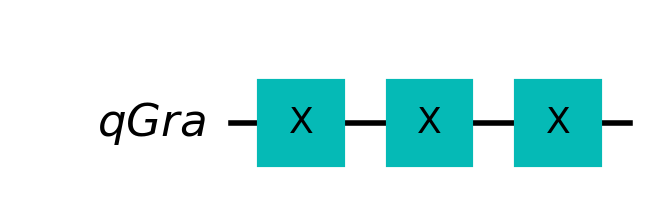

not_gate=QuantumCircuit(1,1) # Create a quantum circuit with 1 qubit and 1 classical bit
not_gate.x(0)
not_gate.measure(0,0)
not_gate.draw(output='mpl')Create logical gates with the help of quantum gates
Ancila qubit - dodatkowy kubit, który jest używany do przechowywania informacji tymczasowej. Jest to kubit, który nie jest używany do przechowywania informacji o wyniku obliczeń.
Barriers - służą do oddzielenia logicznych części obwodu. Nie mają wpływu na działanie obwodu, ale mogą pomóc w jego czytelności.
Measurements - służą do pomiaru stanu kubitów. W Qiskit, pomiary są zawsze wykonywane na końcu obwodu. Wyniki pomiarów są zwracane w postaci klasycznych bitów.
Tutaj dodac obrazek z wyjasnieniem co to achila qubit. Data qubits (nie zmieniaja się w trakcie wykonywania obwodu)+ target qubit (realizuje dodawanie modulo 2 do data qubit) - XOR bramka.
Reprezentacja bramek klasyczych w odwracalny sposób. Nickiel tutorial 2.
NOT gate
The NOT gate flips the value of a bit and, as was mentioned before, an X gate can be considered a NOT gate. The truth table for a NOT gate looks like this:
| Input | Output |
|---|---|
| 1 | 0 |
| 0 | 1 |
AND gate
The output of an AND is true if and only if both inputs are true. The truth table for an AND Gate looks like this:
| A (Input) | B (Input) | Output |
|---|---|---|
| 0 | 0 | 0 |
| 0 | 1 | 0 |
| 1 | 0 | 0 |
| 1 | 1 | 1 |
With a Toffoli gate, we can get the result of an AND gate by interpreting the two control bits as the input bits and the target bit as the output bit.
and_gate=QuantumCircuit(3,1) # Create a quantum circuit with 3 qubits and 1 classical bit
and_gate.ccx(0,1,2)
and_gate.measure(2,0)
and_gate.draw(output='mpl')OR gate
An OR gate returns true if at least one of the input gates is true. The truth table for an OR Gate looks like this:
| A (Input) | B (Input) | Output |
|---|---|---|
| 0 | 0 | 0 |
| 0 | 1 | 1 |
| 1 | 0 | 1 |
| 1 | 1 | 1 |
or_gate=QuantumCircuit(3,1) # Create a quantum circuit with 3 qubits and 1 classical bit
or_gate.cx(1,2)
or_gate.cx(0,2)
or_gate.ccx(0,1,2)
or_gate.measure(2,0)
or_gate.draw(output='mpl')CCX gate (Toffoli gate)
The CCX gate (controlled controlled X Gate) is also called a Toffoli gate. The CCX gate is a three-bit gate, with two controls and one target as their input and output. If the first two bits are in the state \(|1\rangle\), it applies a Pauli-X (or NOT) on the third bit. Otherwise, it does nothing.
Note: Qiskit numbers the bits in a string from right to left.
\(CCX = \begin{pmatrix} 1 & 0 & 0 & 0 & 0 & 0 & 0 & 0 \\ 0 & 1 & 0 & 0 & 0 & 0 & 0 & 0 \\ 0 & 0 & 1 & 0 & 0 & 0 & 0 & 0 \\ 0 & 0 & 0 & 1 & 0 & 0 & 0 & 0 \\ 0 & 0 & 0 & 0 & 1 & 0 & 0 & 0 \\ 0 & 0 & 0 & 0 & 0 & 1 & 0 & 0 \\ 0 & 0 & 0 & 0 & 0 & 0 & 0 & 1 \\ 0 & 0 & 0 & 0 & 0 & 0 & 1 & 0 \\ \end{pmatrix}\)
ccx_gate = QuantumCircuit(3)
ccx_gate.ccx(0,1,2)
ccx_gate.draw(output='mpl')workflow projektów Qiskit
- Build - stworzenie obwodu kwantowego dla reprezentacji analizowanego problemu
- Compile - kompilacja obwodu na symulatorze lub komputerze kwantowym
- Run - uruchomienie obwodu na symulatorze lub komputerze kwantowym
- Analyze - analiza wyników
# Step 1 Import pakietów
# QuantumCircuit - obiekt reprezentujący obliczenia kwantowe
from qiskit import QuantumCircuit, transpile
# AerSimulator - symulator kwantowy
from qiskit_aer import AerSimulator
# plot_histogram - funkcja do rysowania histogramów
from qiskit.visualization import plot_histogram
# Step 2 Inicjalizacja zmiennych
# Create a Quantum Circuit acting on the q register
circuit = QuantumCircuit(2, 2)\[ \ket{\psi} = \frac{1}{\sqrt{2}}(\ket{00}+\ket{11}) \]
# Step 3 Dodanie bramek
# Add a H gate on qubit 0
circuit.h(0)
# Add a CX (CNOT) gate on control qubit 0 and target qubit 1
circuit.cx(0, 1)
# Map the quantum measurement to the classical bits
circuit.measure([0, 1], [0, 1])# Step 4: Wizualizacja obwodu
circuit.draw("mpl")# Step 5 Symulacja obliczeń kwantowych
# Use Aer's AerSimulator
simulator = AerSimulator()
# Compile the circuit for the support instruction set (basis_gates)
# and topology (coupling_map) of the backend
compiled_circuit = transpile(circuit, simulator)
# Execute the circuit on the aer simulator
job = simulator.run(compiled_circuit, shots=1000)
# Grab results from the job
result = job.result()
# Returns counts
counts = result.get_counts(compiled_circuit)
print("\nTotal count for 00 and 11 are:", counts)# Step 6: Wizualizacja wyników
# Plot a histogram
plot_histogram(counts)Kwantowe obracanie monety
from qiskit import (QuantumCircuit, QuantumRegister, ClassicalRegister,
execute, Aer, __qiskit_version__)
from qiskit.visualization import plot_bloch_multivector
import matplotlib as mpl
import matplotlib.pyplot as plt
import warnings
warnings.filterwarnings('ignore')
#mpl.rcParams['figure.dpi']= 200def obwod(strategia):
qc = QuantumCircuit(QuantumRegister(1, name='qGra'))
for bramka in strategia:
if bramka == 'I':
qc.id(0)
elif bramka == 'H':
qc.h(0)
elif bramka == 'X':
qc.x(0)
return qc
strategia = 'XXX'
obwod(strategia).draw('mpl')
%matplotlib inline
def animacja(strategia):
qc = QuantumCircuit(QuantumRegister(1, name="q0"))
symulator = Aer.get_backend('statevector_simulator')
wynik = execute(qc, backend=symulator).result()
stan = wynik.get_statevector()
print(stan)
print("stan poczatkowy:")
plot_bloch_multivector(stan)
plt.show()
for it, bramka in enumerate(strategia):
if bramka == 'I':
qc.id(0)
elif bramka == 'H':
qc.h(0)
elif bramka == 'X':
qc.x(0)
wynik = execute(qc, backend=symulator).result()
stan = wynik.get_statevector()
print("stan po bramce", bramka)
plot_bloch_multivector(stan)
plt.show()
animacja(strategia)Statevector([1.+0.j, 0.+0.j],
dims=(2,))
stan poczatkowy:
stan po bramce X
stan po bramce X
stan po bramce Xdef sedzia(obwod):
qr = QuantumRegister(1)
cr = ClassicalRegister(1)
ob = QuantumCircuit(qr, cr)
ob.append(obwod, qr)
ob.measure(0, 0)
symulator = Aer.get_backend('qasm_simulator')
return execute(ob, backend=symulator, shots=1000).result()strategia = 'XXX'
stats = sedzia(obwod(strategia)).get_counts()
print(stats){'1': 1000}strategia = 'HXH'
stats = sedzia(obwod(strategia)).get_counts()
print(stats){'0': 1000}def klasycze_strategie():
wyniki = []
for ruch_1 in ['I','X']:
for ruch_2 in ['I','X']:
for ruch_3 in ['I','X']:
strategia = ruch_1 + ruch_2 + ruch_3
print("strategia",strategia)
ob = obwod(strategia)
ob.draw('mpl')
plt.show()
stats = sedzia(ob).get_counts()
print("statystyka", stats)
wyniki.append((strategia, stats))klasycze_strategie()strategia III
statystyka {'0': 1000}
strategia IIX
statystyka {'1': 1000}
strategia IXI
statystyka {'1': 1000}
strategia IXX
statystyka {'0': 1000}
strategia XII
statystyka {'1': 1000}
strategia XIX
statystyka {'0': 1000}
strategia XXI
statystyka {'0': 1000}
strategia XXX
statystyka {'1': 1000}napisz sprawdzenie gdy ruch 1 i 3 to H